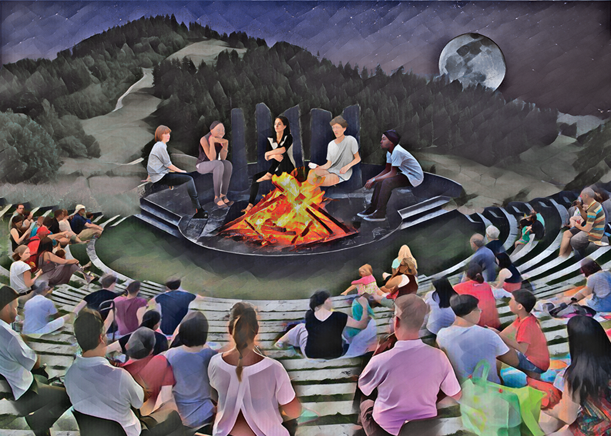
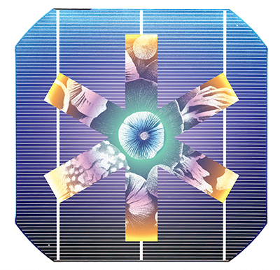
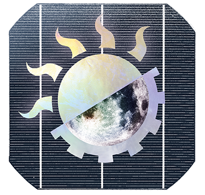
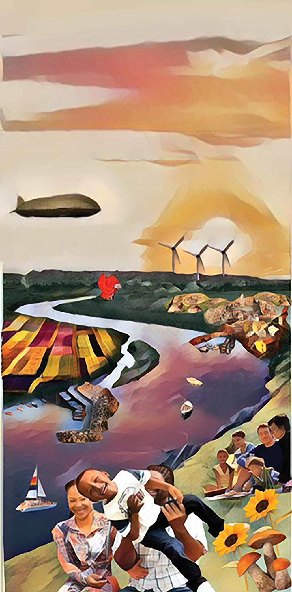

Solarpunk Futures is licensed under a Creative Commons Attribution - NonCommercial - ShareAlike 4.0 International License. Read more.
You can download and play our free print & play version.

Solarpunk?
Solarpunk is a visionary utopian politics and aesthetic that critically engages the reality of capitalist catastrophe while maintaining a radical optimism about humanity's hopes for a communal, ecological future.
It's a restorative justice process at a planetary scale — among people and between humans and non-human nature. That means reclaiming pieces of pre-capitalist culture, material accountability for old practices and radical adaptability toward new ones, all while maintaining a utopian and ecological vision for the potentialities of our interrelations in the present.
Solarpunk is being actively defined by the artists and activists co-creating it. Here are links to some of the amazing and inspiring work in and around the Solarpunk genre:

How it works
The primary game, called the Festival of Remembrance, revolves around four sets of cards. Each player gets an Ancestor and at least one Tool and Value. Over a series of four phases, the players collectively "remember" how their Ancestors faced and overcame a Challenge.
The players are guided through a collaborative storytelling process, imagining the pathway to their utopian future. In a conversation that can range from solemn to comical in tone, the players decide collectively how they worked together and why it took all of them to overcome the Challenge.
-

Ancestor
Who were you and your friends during the great transition from capitalism to utopia.
-

Tools
What knowledge, resources, skills, or institutions did you draw on in your struggle.
-

Values
What visionary ethics guided you.
-
Challenges
What aspect of the world before was reformed, transformed, or abolished.

Solarpunk Futures is an artist’s game for collaborative utopian visioning, working in (and against) the conventions of tabletop role-playing. The game employs backcasting, where players reverse engineer presupposed utopian outcomes by grounding them in present material realities. Solarpunk Futures is designed to create conditions of collective, rather than individual, utopian imagining, and avoid the banal extrapolation of present trends into dystopian imaginaries. The game challenges people to envision a utopian future and to collectively engage in the real planning around what it might take to get there.
The game’s visual language engages the iconographic traditions of Art Nouveau stained glass, German expressionist woodcuts, and Japanese karuta through a pastel palette informed by palliative design. Computer augmented printmaking techniques involving a robotic drawing arm and AI-image processing concretize a microcosmic example of technology integrated within democratic social processes and emancipatory goals. The entire game is free to play forever and released under a Creative Commons BY—NC—SA 4.0 license. The game's social structure enables players to approach the seemingly insurmountable challenges of today's material world through serious play, interdependence, and radical possibility. This unity of means and ends in design, production, practice, and distribution is intended to sublate the game's politics of utopia-as-process, in which each component forms a supportive aspect of the holistic body of work.
Solarpunk Futures can therefore be conceived as a processual system—a dialectic between the printed matter, technics, design, and illustration as well as the relational arts of gameplay, utopianpolitik futuring, and dialogue itself. Through the collaborative performance of memory, visionary narratives emerge of a free and ecological society–rooted in the limitless potentialities of our interrelations in the present.
Solarpunk Futures will be played in public spaces, among an intergenerational audience of teens and adults. Particularly, Solarpunk Futures will be relevant to activists and organizers, educators and librarians, artists and performers, nonprofits, and existing community groups as a fun and engaging way to bring people together and inspire immediate action toward compelling visions of the future.

The project is supported in part by grants from the Madison Arts Commission and Dane Arts, with additional funds from the Wisconsin Arts Board, Endres Mfg. Company Foundation, The Evjue Foundation, Inc., charitable arm of The Capital Times, W. Jerome Frautschi Foundation, and Pleasant T. Rowland Foundation.